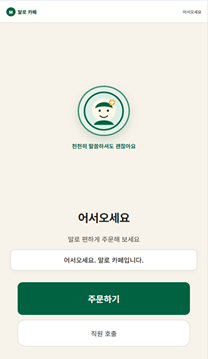
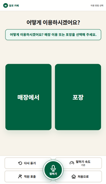
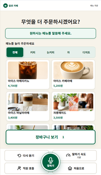
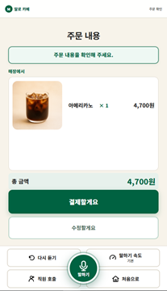
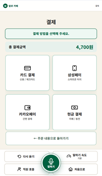
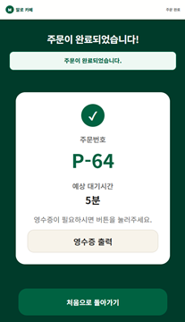

54%
65세 이상 고령층 키오스크 이용 포기율
대기 화면의 '주문하기' 한 번으로 시작하여 음성 주문, 옵션 선택, 주문 확인 및 가상 결제까지 이어지는 전체 프로세스를 확인하세요.
65세 이상 고령층의 키오스크 이용 포기율은 54%에 달하며, 60대 13명 대상 사전 조사에서도 메뉴 탐색과 실수 시 재시작의 두려움이 반복해서 확인되었습니다.
54%
65세 이상 고령층 키오스크 이용 포기율
8 / 13
메뉴 탐색·옵션 선택이 가장 큰 어려움이라고 응답
7 / 13
실수 시 주문을 처음부터 다시 해야 하는 부담
10 / 13
듣기 쉽고 명확한 방식의 재안내를 희망
출처: 말로 PRD 3.3 사용자 조사 및 설문 근거 (60대 13명 대상) · 사용자 테스트 프로토콜 Spec
"버튼을 없애는 것이 아니라 버튼을 찾아다닐 필요를 줄이고,
사용자가 듣기 어려워하면 말하는 방식도 바꾼다."
조회·추가·수정·삭제·확인 등 핵심 주문 흐름은 자연스러운 음성으로 수행하고, 확인과 복구는 큰 글씨 화면이 함께 도와줍니다. 한 번의 충분한 발화는 항목별로 번거롭게 다시 묻지 않습니다.
"다시 말해줘", "천천히 말해줘"라는 사용자의 명시적 요청에 따라 발화 속도와 문장 분절이 3단계로 유연하게 적응합니다.
주문은 두 종류입니다.
아메리카노. 두 잔.
총 금액은 9,400원입니다. Level 2 적응형 안내 예시
인식 실패나 모호한 요청이 곧바로 잘못된 주문으로 이어지지 않습니다. 검증된 장바구니는 엄격히 보호되며, 잘못 반영된 직전 변경은 음성이나 화면 터치로 즉시 되돌릴 수 있습니다.
고령 사용자의 인지 부담을 최소화한 6단계 주문 여정입니다. 실제 동작 중인 말로 키오스크의 캡처 화면입니다.

화면의 큰 '주문하기' 버튼 터치 또는 음성으로 간편하게 시작

매장 이용 또는 포장 여부를 직관적인 2분할 버튼 또는 음성으로 선택

큰 글씨 메뉴와 하단 마이크를 통해 사람에게 말하듯 편하게 주문

선택한 메뉴, 수량, 금액을 큰 글씨로 명확히 검토 및 수정

카드, 스마트폰 간편결제, 현금 등 친숙한 4가지 결제 방식 지원

주문번호(P-64)와 예상 대기시간을 큰 글씨와 음성으로 확인
외부 클라우드 의존 없이 100% 로컬 환경에서 동작하는 프라이버시 보호 파이프라인입니다. NLU는 주문 상태를 임의로 변경하지 않고 구조화된 OrderCommand를 생성하며, 결정론적 Order Engine이 검증 후 장바구니를 갱신합니다.
마이크 음성 입력 및 Silero VAD 기반 발화 종료 감지
카페 도메인 특화 QLoRA 파인튜닝 음성 인식
발화를 정형화된 OrderCommand[] 규격으로 변환
메뉴 DB 유효성 검증 및 결정론적 상태 전이 실행
MeloTTS 친절체 기반 Level 0~2 속도·분절 적응 합성
고령 친화 큰 글씨 화면 동기화 및 음성 안내 출력
인터넷 연결이 불안정하거나 끊긴 매장 환경에서도 음성 인식과 합성이 즉각 수행되며, 고객의 음성 데이터가 외부로 유출되지 않습니다.
LLM/NLU의 환각(Hallucination)으로 인한 오주문을 원천 차단하기 위해, 실제 결제 및 장바구니 변경은 검증된 결정론적 엔진만 수행합니다.
고객의 "다시 말해줘", "천천히 말해줘" 피드백을 실시간 감지하여 안내 속도와 문장 호흡을 고령자의 청취 속도에 맞추어 조절합니다.
저장소 실측 기록(worklogs) 기반의 실제 측정 결과입니다. STT와 Adaptive TTS의 실측 수치를 명확히 제시합니다.
89.13%
메뉴명 인식 Recall (Baseline 대비 +1.6%p 향상)
49.20%
수량 인식 Recall (Baseline 대비 +8.6%p 대폭 개선)
CER 0.1095
문자 오류율 (Baseline 0.1646 대비 -33.5% 감소)
측정 환경: 도메인 평가셋 506문장(10 메뉴 × 51 패턴) · NVIDIA RTX 4060 Ti — 저장소 worklogs/stt.md
+40.7ms
Level 1 평균 추가 지연 (p95 +54.8ms로 극소 지연 달성)
RTF < 1.0
모든 Level에서 실시간 합성 배속(RTF < 1.0) 안정적 유지
측정 환경: T-21 평가 문장 20개 · 200회 합성 · NVIDIA RTX 5070 Ti 16GB — 저장소 worklogs/tts.md
≤ 1.2초
Time to First Audio (요구 기준 1.5초 이내 만족 목표)
목표·요구 기준: e2e-latency Spec · 최종 Real E2E 통합 재측정 기준
고정된 프로토콜로 세 가지 실험 조건을 비교 검증합니다. 피험자 배정은 순서 효과를 통제하는 라틴 방격법(Latin Square)을 적용합니다.
Group A (대조군)
카테고리 탭 탐색 · 작은 텍스트 화면 · 기존 상용 키오스크 환경
Group B (비교군)
음성 PTT + 터치 GUI · 적응 기능 없는 고정 속도 TTS 안내
Group C (시험군)
주문하기 1회 + 자동 Listening · Adaptive TTS Level 0–2 + 큰 글씨 Minimal GUI
AI Human 7기 D조
팀장 · TTS
팀원 · STT
팀원 · NLU